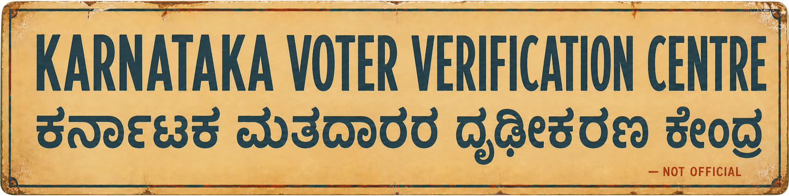

Check your Karnataka voter record.

NEW · Now includes the clarification shortlist
10,778,213 ASDDO records
44,625,877 draft-roll records
— voters with clarification notices
Two voter indexes + exact EPIC notice checks · all 224 constituencies
Some clarification-notice coverage is incomplete.
Available records are included, but 50 Ballari (Bellary), 29 Chitradurga and 4 Vijayapura source files became unavailable before retry.
If your record appears in an ASDDO file
- Check the official draft roll. Search with the EPIC ID. Compare your name, address, polling station and part number.
- File Form 6 by 23 September. Include the prescribed SIR Declaration. Submit through the Voters’ Service Portal or give the form to the ERO for your current address.
- Attach the papers that apply to your case. Form 6 lists accepted proof of age and address. The ERO may ask for papers required by the SIR process.
- Use Form 8 for a move or correction. Send it by 23 September through the portal or give it to the ERO for your current address.
- Keep your acknowledgement. Track the application in the Voters’ Service Portal. Call 1950 for help finding your BLO or ERO.
If the ERO asks for clarification
- Read the notice first. It gives the response deadline and your hearing details.
- Send the requested papers. Use Submit Document Against Notice in the Voters’ Service Portal, or give the papers to the ERO named on the notice.
- Attend the hearing. Carry the notice and the papers requested for your case. Ask for an acknowledgement after an in-person submission.
- Keep the written order. File an appeal with the District Election Officer within 15 days of the ERO's order.
Schedule checked 26 August 2026
Dates to keep in view
24 Aug 2026Karnataka published the draft electoral roll.
By 23 Sep 2026Claims and objections close. Use Form 6 for a missing name; Form 8 covers a move or correction.
By 22 Oct 2026EROs finish the notice phase and decide filings by this date.
27 Oct 2026The final electoral roll is due on this date.
What the voter indexes and notice check contain
10,778,213ASDDO records carrying a stated reason.
58,948ASDDO electoral parts represented.
44,625,877records in the draft electoral roll.
60,922draft-roll electoral parts represented.
224 / 224Assembly constituencies represented across both indexes.
—distinct EPIC IDs in published clarification notices.
435,687mapping-only rows have no searchable voter record. Two source folder listings could not be read during the refresh.
The search first identifies a voter in Karnataka’s ASDDO files or draft roll, then checks that EPIC ID in the clarification notices. It does not run a separate name search across notices. PDF text can carry spelling errors; the counts describe each source layer.
Official counters
Official electoral search
ECI Voters’ Service Portal
Official forms
Form 6 for inclusion
Form 8 for a move or correction
ECI guidance on electoral-roll appeals
CEO Karnataka ASDDO page
CEO Karnataka notices issued
Find BLO / ERO contacts
CEO Karnataka
Karnataka voter helplines: 1950 · 1800 4255 1950
DataChutney built this unofficial search from public ASDDO files, Karnataka’s draft electoral roll and the CEO’s published clarification notices. Check every match in ECI’s official search; your ERO decides each electoral-roll application.